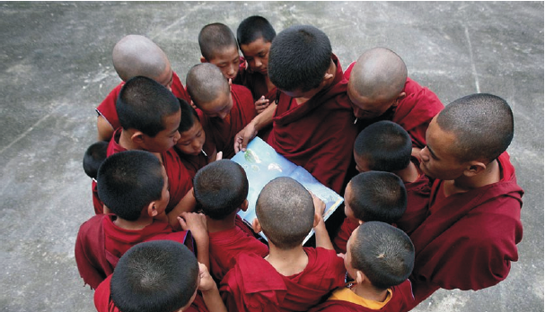
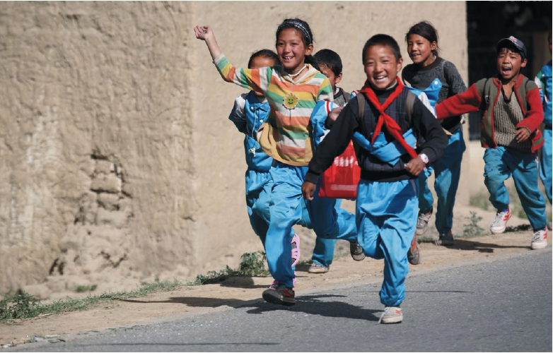

项目一主标题
副标题
牧云社是中国第一个非官方的公益跨界艺术团体，由具有爱心和公益情怀的艺术家、音乐家、导演、歌唱家、舞蹈家、建筑师、服装设计师、摄影师、演员、文学家、诗人、批评家、收藏家和热爱艺术的企业家组成。牧云社是中国第一个非官方的公益跨界艺术团体，由具有爱心和公益情怀的艺术家、音乐家、导演、歌唱家、舞蹈家、建筑师、服装设计师、摄影师、演员、文学家、诗人、批评家、收藏家和热爱艺术的企业家组成。
阅读更多牧云社是中国第一个非官方的公益跨界艺术团体，由具有爱心和公益情怀的艺术家、音乐家、导演、歌唱家、舞蹈家、建筑师、服装设计师、摄影师、演员、文学家、诗人、批评家、收藏家和热爱艺术的企业家组成。牧云社是中国第一个非官方的公益跨界艺术团体，由具有爱心和公益情怀的艺术家、音乐家、导演、歌唱家、舞蹈家、建筑师、服装设计师、摄影师、演员、文学家、诗人、批评家、收藏家和热爱艺术的企业家组成。
牧云社倡导艺术改变生活、艺术生活化、生活艺术化，旨在提高全民的文化艺术素质。通过普及艺术知识、推动艺术发展、扶植艺术人才和开发艺术产业，使艺术有效地转化为生产力，从而促进整个社会的协调发展。
牧云社发起的北京牧云文化艺术基金会，是推动艺术发展、贯彻牧云精神的纯公益慈善机构。
牧云社倡导艺术改变生活、艺术生活化、生活艺术化，旨在提高全民的文化艺术素质。通过普及艺术知识、推动艺术发展、扶植艺术人才和开发艺术产业，使艺术有效地转化为生产力，从而促进整个社会的协调发展。
牧云社发起的北京牧云文化艺术基金会，是推动艺术发展、贯彻牧云精神的纯公益慈善机构。

